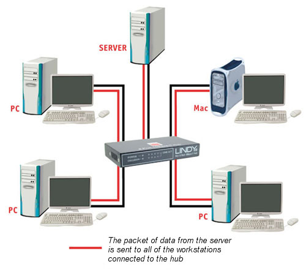
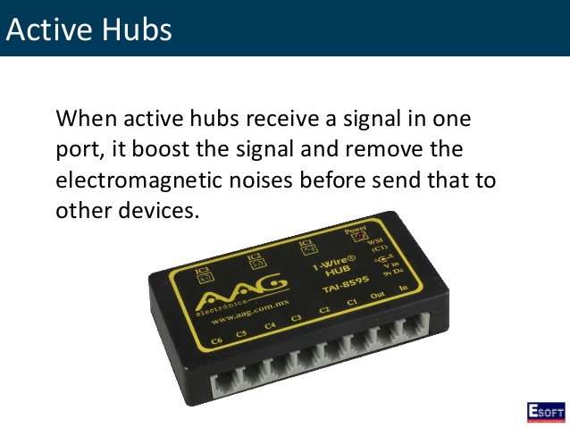
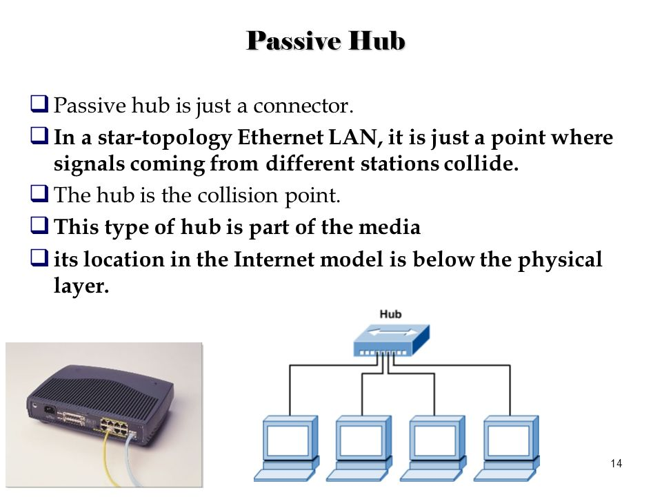
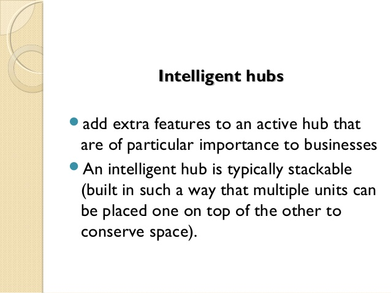
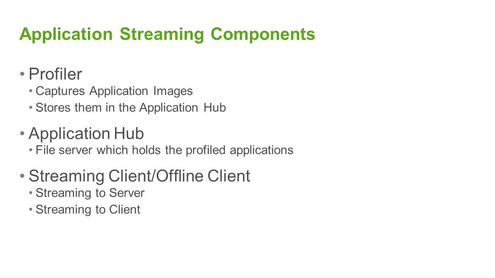
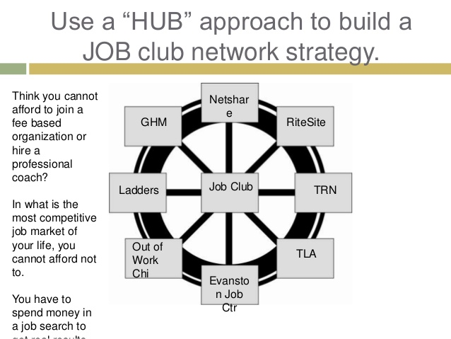
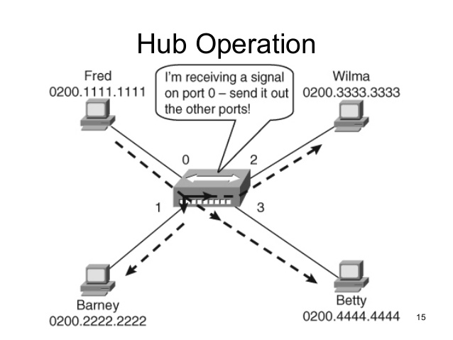

A hub is a component of a network with a high-degree node. Hubs have a significantly larger number of links in comparison with other nodes in the network. The number of links (degrees) for a hub in a scale-free network is much higher than for the biggest node in a random network, keeping the size N of the network and average degree k constant. The existence of hubs is the biggest difference between random networks and scale-free networks. In random networks, the degree k is comparable for every node; it is therefore not possible for hubs to emerge. In scale-free networks, a few nodes (hubs) have a high degree k while the other nodes have a small number of links.

Types of Hub:
On the basis of its working methods, the Hubs can be divided into three types, given as:
*Active Hub
*Passive Hub
*Intelligent Hub
Active Hub:
As its name suggests, Active Hub is a hub which can amplify or regenerate the information signal. This type of bus has an advantage as it also amplifies the incoming signal as well as forward it to multiple devices. This Bus is also known as Multiport Repeater. It can upgrade the properties if incoming signal before sending them to destination.

Passive Hub:
Passive Hub works like a simple Bridge. It is used for just creating a connection between various devices. It does not have the ability to amplify or regenerate any incoming signal. It receives signal and then forward it to multiple devices.

Intelligent Hub:
This is the third and last type of Bus. It can perform tasks of both Active and Passive buses. Also, it can perform some other tasks like Bridging and routing. It increases the speed and effectiveness of total network thus makes the performance of whole network fast and efficient.

Applications Of Hub:
Networking Hub is widely used networking connectivity device. It has many advantages over other connectivity devices. Some Application of Networking Hub are given below:

*Hubs are used to create small Home Networks.
*Hubs are used for monitoring the networks.
*Hubs are used in Organizations and Computer Labs for connectivity.
*It Makes one device or peripheral available throughout the whole network
Attributes
There are several attributes of Hubs in a scale-free networks
Shortening the path lengths in a network
The more observable hubs are in a network, the more they shrink a distances between nodes. In a scale-free networks hubs serve as bridges between the small degree nodes. Since the distance of two random nodes in a scale-free networks is small, we refer to scale-free networks as "small" or "ultra small". While a difference between path distance in a various small networks may not be noticeable, the difference in a path distance between large random network and scale-free network is remarkable.
Average path length in scale-free networks: {\displaystyle \ell \sim {\frac {\ln N}{\ln \ln N}}.} \ell \sim {\frac {\ln N}{\ln \ln N}}.
Aging of hubs (nodes)
The phenomenon present in a real networks, when older hubs are shadowed in a network. This phenomenon is responsible for changes in evolution and topology of networks. The example of aging phenomenon may be the case of Facebook overtaking the position of the largest hub on the Web where Google was the largest node since 2000.[citation needed]
Robustness and Attack Tolerance
During the random failure of nodes or targeted attack hubs are key components of the network. During the random failure of nodes in network hubs are responsible for exceptional robustness of network. The chance that a random failure would delete the hub is very small, because hubs coexists with a large number of small degree nodes. The removal of small degree nodes does not have a large effect on integrity of network. Even though the random removal would hit the hub, the chance of fragmantation of network is very small because the remaining hubs would hold the network together. In this case, hubs are the strength of a scale-free networks.

During the targeted attack on hubs, the integrity of network would fall apart relatively fast. Since small nodes are predominantly linked to hubs the targeted attack on the largest hubs would result in destruction of network in a short period of time. The financial market meltdown in 2008 is an example of such a network failure, when bankrupt of the largest players (hubs) led to a continuous breakdown of the whole system. On the other hand, it may has a possitive effect when removing hubs in a terrorist network may destroy the whole terrorist group. The attack tolerance of network may be increased by connecting its peripheral nodes, however it requires to double the number of links.
Degree correlation
The perfect degree correlation means that each degree-k node is connected only to the same degree-k nodes. Such connectivity of nodes decide the topology of networks, which has an effect on robustness of network, the attribute discussed above. If the number of links between the hubs is the same as would be expected by chance, we refer to this network as Neutral Network. If hubs tend to connected to each other while avoiding linking to small-degree nodes we refer to this network as Assortative Network. This network is relatively resistant against attacks, because hubs form a core group, which is more reduntant against hub removal. If hubs avoid connecting to each other while linking to small-degree nodes, we refer to this network as Disassortative Network. This network has a hub-and-spoke character. Therefore, if we remove the hub in this type of network, it may damage or destroy the whole network.
Spreading phenomenon
The hubs are also responsible for effective spreading of material on network. In an analysis of disease spreading or information flow, hubs are referred to as super-spreaders. Super-spreaders may have a positive impact, such as effective information flow, but also devastating in a case of epidemic spreading such as H1N1 or AIDS. The mathematical models such as model of H1H1 Epidemic prediction may allow us to predict the spread of diseases based on human mobility networks, infectiousness, or social interactions among humans. Hubs are also important in the eradication of disease. In a scale-free network hubs are most likely to be infected, because of the large number of connections they have. After the hub is infected, it broadcasts the disease to the nodes it is linked to. Therefore, the selective immunization of hubs may be the cost-effective strategy in eradication of spreading disease.

souravsingh2626@gmail.com
indus hostel !!
room number 207......
contact..
8493073943
........................................................................................................................